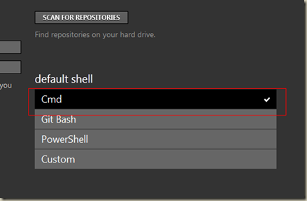

分享个人wiki部署脚本
首先分析一下这个同步需求：
- 需要自动同步 vimwiki_html 的所有文件
- 有变更的文件才同步上去
- 被删掉的文件也要能同步删掉
- 由于文件修改频繁，不需要一旦修改就马上同步
- 有需要时可以手动同步
- 最好能排除一些不用放在线上的文件
- 不能占用太多系统资源
这里我将vimwiki生成的html托管在了自己的github上面，此vim脚本的运行需要依赖你gvim对应版本的python，或者自己在windows下编译一个gvim。(好吧，这个实在够蛋疼。。。)
安装并配置你的github
首先关闭360安全卫士等流氓软件！切记！
从github下载github for window，链接如下：
http://github-windows.s3.amazonaws.com/GitHubSetup.exe
安装完成后，用你的账号登录，然后在tools/options中设置默认的shell为cmd，如下图：

完成后双击桌面上的git shell图标，打开git shell 后执行如下命令
echo %path% >>c:\path.txt
打开c:\path.txt 将里面的内容全部复制，粘贴到系统的path变量中(覆盖原来的path)。完成此步骤后，cmd中会使用github生成的配置进行ssh的key-agent验证登录，故实现了git命令免密码的效果。完成后，运行cmd，输入git，能识别这个命令表示成功。然后就可以使用我写的这个脚本了(汗，脚本依赖有点高~~)
脚本的代码如下：
"=========================================================" FileName: vimwiki_sync.vim
" Desc:
" Author: WangHeng
" Email: me@wangheng.org
" HomePage: http://wangheng.org
" Version: 1.1
" LastChange: 2012-07-19 22:32:39
" History: 1、2012-07-20 暂时注释VimwikiGet('path_html')
" 不好用原因待研究
"=========================================================" let s:wiki_html_path=VimwikiGet('path_html')这条命令有时候不好用，故暂时注释掉
if !has('python')
echo "Git Auto Upload Error:\nRequired vim compiled with +python"
finish
endiffunction! s:Vimwiki_Upload()
python <<EOF
import os
import timedt = time.strftime("%Y-%m-%d %H:%M", time.localtime())
#Edit the html_path to your html files path.
html_path='XXX\html' #替换成你的public_html所在路径html_path=vim.eval('s:wiki_html_path')
os.chdir(html_path)
path=os.getcwd()
print "Now, will sync files in "+path+" at "+dt
os.system('git add .&&git commit -a -m "auto commited at %s "&&git push' % (dt))print "All done~!"
EOFendfunction
command! -range VimwikiUpload :call s:Vimwiki_Upload()
nnoremap <F11> :VimwikiUpload<cr>
或者直接点击这里下载。
使用方法是在vim的普通模式下按F11，另外你还可以将中间的那段python代码提出来作为一个单独的python脚本，这样你就可以将它加到计划任务定时执行了，有需求的朋友可以试试~~任何问题欢迎留言交流~
 微信
微信 支付宝
支付宝